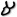
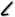
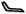
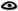
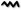
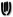
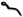
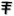
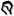

Jeff A. Benner
Pada tahun 1905, Flinders Petrie, seorang ahli sejarah Mesir terkenal dan pelopor dalam arkeologi modern, menemukan prasasti yang sebelumnya simbol-simbol tersebut tidak diketahui di Serabit el-Khadim.
Dr. Alan H. Gardiner, ahli sejarah Mesir terkenal lainnya, mempelajari prasasti ini secara rinci. Dia menemukan bahwa prasasti Sinaitik ini terdiri dari total tiga puluh dua simbol. Karena jumlah simbol yang terbatas Dr. Gardiner menentukan bahwa ini adalah alfabet.
Gardiner kemudian dapat dengan mudah mengidentifikasi alfabet Sinait ini sebagai Semit karena bersifat pictographic alam pada alfabet tersebut. Nama setiap huruf Ibrani adalah kata Ibrani dengan makna.
Huruf pertama dari alfabet Ibrani disebut alef, sebuah kata dalam bahasa Ibrani yang berarti "lembu," Huruf kesepuluh disebut yud atau yad yang berarti "tangan" dan huruf keenam belas adalah ayin, sebuah kata yang berarti "mata".
Gardiner menemukan bahwa huruf-huruf dalam prasasti Sinaitik kuno ini adalah gambar dari nama-nama dari huruf-huruf Ibrani. Gambar kepala sapi/lembu (kiri) adalah huruf aleph, gambar tangan (tengah) adalah huruf yad dan gambar mata (kanan) adalah huruf ayin.
Hubungan antara pictograph dan nama-nama huruf Semit ini, Dr. Gardiner mengusulkan, membuktikan bahwa ini adalah pendahulu abjad Ibrani Kuno / Lama yang telah diketahui sebelumnya.
Setelah ditentukan bahwa naskah baru itu adalah Semit, Dr. Gardiner, pada tahun 1916, mampu menerjemahkan sebagian dari satu prasasti. Prasasti ini mencakup huruf-huruf ; lamed, beyt, ayin, lamed dan tav, yang merupakan kata Semit לבעלת (l'balt), yang berarti "untuk wanita".
Pada tahun 1999, John dan Deborah Darnell sedang mensurvei rute perjalanan kuno di padang pasir Mesir selatan ketika mereka menemukan sebuah prasasti lain yang sangat mirip dengan prasasti Sinaitik yang ditemukan oleh Petrie.
Setiap huruf mewakili suara dan konsep. Huruf pertama,  (Perhatikan bahwa bahasa Ibrani dibaca dari kanan ke kiri), adalah aleph (diucapkan ah-leph) dan mewakili suara "Ah" dan "Eh". Aleph adalah kata Ibrani yang berarti "lembu," dan surat ini adalah gambar kepala lembu dan mewakili konsep "kekuatan," dari kekuatan lembu.
Huruf lamed, , huruf ke dua belas, adalah gambar tongkat penggembala dan mewakili suara "L" dan juga konsep "otoritas," dari otoritas gembala atas kawanan domba.
Bila kedua huruf ini digabungkan, kita memiliki kata Ibrani (EL, yang ditulis sebagai אל dalam alfabet Ibrani Modern, Strong's # 410), "otoritas kuat".
It is in the power of my hand to do you hurt. (Genesis 31:29, KJV)
Bagian ini mencakup kata Ibrani EL, yang dalam King James Version diterjemahkan sebagai "kekuatan." Namun, terjemahan yang lebih baik, berdasarkan gambar kata EL, adalah "Ada kekuatan dan otoritas di tangan saya untuk menyakiti Anda."
Blessed be Abram of the most high God, possessor of heaven and earth. (Genesis 14:19, KJV)
Bagian ini juga menggunakan kata Ibrani yang sama, EL, namun dalam King James Version itu diterjemahkan sebagai "Tuhan." Berdasarkan gambar kata El, terjemahan yang lebih baik adalah "Terberkatilah Abram dengan kekuatan dan otoritas paling tinggi, pemilik surga dan bumi." Ketika kita melihat kata "Tuhan" dari perspektif barat kita melihat seorang pria berjanggut tua duduk di atas takhta di awan. Ketika orang Ibrani kuno melihat kata "EL," mereka melihat kekuatan seekor lembu dan otoritas seorang gembala.
Karakteristik Abjad Awal
Dalam Alfabet Inggris modern kita masing-masing huruf dikaitkan dengan dua karakteristik, bentuk dan bunyi. Huruf pertama alfabet kami berbentuk "A" dan memiliki suara "a". Abjad Ibrani Kuno memiliki empat karakteristik: bentuk, bunyi, nama dan makna. mewakili suara. Setiap huruf dalam huruf Kuno lebih banyak merepresentasikan, pictograph (gambar), suku kata (nama), mnemonik (makna) dan fonetik (suara). Hubungan unik antara karakteristik huruf Ibrani ini digunakan untuk membantu merekonstruksi alfabet asli Ibrani dan pada gilirannya akan membantu dalam definisi dan hubungan akar suatu kata.
Bentuk (Pictographic)
Setiap huruf awal adalah gambaran yang jelas mewakili sesuatu yang konkret. Gambar kuno mewakili mulut, yang mewakili mata, mewakili air, dan mewakili telapak tangan. Terkadang gambar huruf itu tidak mudah dikenali. Misalnya gambar mungkin sulit ditentukan. Namun, pengetahuan menyeluruh tentang budaya dan gaya hidup orang Semit kuno akan membantu mengungkapkan makna pictograph tersebut. Dalam kasus , dengan pemahaman tentang tenda bangsa semit kita tahu bahwa gambar ini adalah representasi sempurna dari denah tenda.
Makna (Mnemonik)
Arti mnemonik dari pictograph adalah makna yang diperluas, terkait dengan pictograph, yang biasanya berhubungan dengan fungsi daripada penampilan dari apa yang dilambangkan oleh huruf. Misalnya, pictograph memiliki makna mnemonik yang diperluas untuk berbicara, meniup dan terbuka. Sementara setiap huruf Ibrani memiliki nama yang mengidentifikasi gambar itu, makna yang diperluas sering ditemukan dalam kata-kata yang berasal dari namanya. Misalnya, kata Ibrani (sin) literali berarti duri, dan pictograph untuk huruf ini adalah gambar duri. Kata sin adalah akar induk dan beberapa arti lain dari huruf ini adalah "benci, melindungi dan merebut." Gagasan ini ditemukan dalam kata-kata yang berasal dari akar induk yang meliputi; saney = benci, sa'an = menusuk, sa'on = senjata, sinah = perisai (proteksi). Gagasan "ambil" berasal dari fungsi duri yang memegang bulu binatang sehingga bisa dibawa ke lokasi lain dan juga membenci, yang memegangi Anda, senjata dan perisai, yang juga Anda pegang.
Nama (silabus)
Setiap pictograph dikaitkan dengan, biasanya, satu suku kata dari dua konsonan. Selain suku kata ini adalah nama pictograph, juga kata Semit / Ibrani untuk apa yang digambarkan oleh pictograph. Nama pictograph adalah "peh" dan juga kata Ibrani untuk "mulut". Berabad-abad sebelum pictographs semitik kuno ditemukan, masing-masing huruf Ibrani diidentifikasi dengan sebuah nama. Sebagai contoh, nama dari huruf Ibrani ר adalah "resh," yang juga merupakan kata Ibrani untuk "kepala". Ketika huruf gambar kuno itu , jelas sebuah gambar "kepala", ditemukan, tidaklah sulit untuk mengetahui bahwa ini adalah bentuk kuno dari huruf ר.
Suara (Fonetik)
Huruf pertama dari silabus tersebut memberikan bunyi tunggal untuk tujuan membentuk kata dan kalimat. Nilai fonetik dari pictograph adalah "p."
Kunjungi artikel The Ancient Semitic (Early) Alphabet